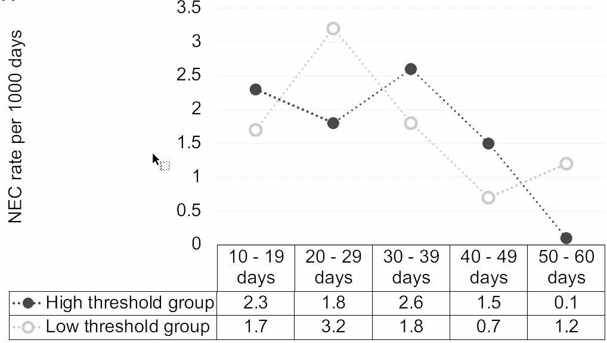

Unraveling the Mystery: Do RBC Transfusions Trigger NEC in ELBWI?
In the intricate world of neonatal care, one of the most dreaded complications is necrotizing enterocolitis (NEC). This gastrointestinal disease not only accounts for a significant portion of neonatal deaths but also poses a heightened risk of severe morbidity among survivors. Over the years, observational studies have hinted at a potential link between anemia, red-cell transfusions, and NEC risk in extremely low-birthweight (ELBW) infants. However, recent randomized clinical trials have challenged these findings, leaving a crucial question unanswered: Does the timing of red-cell transfusions influence NEC risk?
To shed light on this pressing issue, our team embarked on a journey to investigate the temporal association between red-cell transfusions and NEC in ELBW infants enrolled in the Transfusion of Prematures (TOP) multicenter trial.
This secondary analysis used the conceptual model shown below and focused on ELBW infants who survived to postnatal day 10.

By meticulously examining the distribution of red-cell transfusions and the occurrence of NEC up to postnatal day 60, we aimed to unravel the mystery surrounding NEC development. Hazard periods of exposure to red-cell transfusions were compared with control periods of non-exposure, with a keen eye on identifying any transient spikes in NEC risk following transfusion events.
Of the 1,824 ELBW infants randomized during the TOP trial, 1,690 were included in the analysis. Surprisingly, despite the initial concerns raised by observational studies, the risk of NEC did not significantly differ between 4947 post-transfusion hazard periods and 5813 pre-transfusion control periods. Fifty-nine of the 133 NEC cases identified during the study period occurred during hazard periods (44.4%). This finding challenges the notion of a direct temporal association between red-cell transfusions and NEC risk in ELBW infants within the hemoglobin ranges outlined by the TOP trial.
Moreover, stratifying the risk based on randomization groups revealed intriguing insights. While the overall risk of NEC remained consistent across different transfusion thresholds, the incidence rate of NEC per 1000 days peaked between postnatal days 20 and 29 in the lower threshold group, suggesting potential variations in NEC risk based on transfusion strategies to prevent severe anemia.

In the quest to unravel the complexities of NEC development in ELBW infants, this study provides a valuable piece of the puzzle. By meticulously dissecting the temporal relationship between red-cell transfusions and NEC risk, we have challenged existing paradigms and opened new avenues for exploration. By continuing to explore the intricate interplay of factors influencing NEC risk, we can strive towards better outcomes and brighter futures for our most vulnerable patients.
Read the full-text article published in JAMA Network Open here